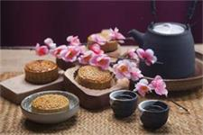
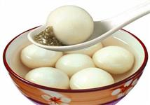
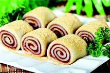

粽子
粽籺，俗称“粽子”，古称“角黍”、“裹蒸”、“包米”、“筒粽”等。粽籺一是一种用箬叶、芦叶、柊叶、露兜叶或槲叶等包裹糯米或黏黍，经过蒸煮而成的食品。粽早在春秋时期就已出现，最初是用来祭祀祖先和神灵。到了晋代，粽成为了端午节庆食物，南北朝时期据说是纪念屈原，这个传说流传至今。粽作为中国历史文化积淀最深厚的传统食品之一，亦传播甚远。日本、越南以及华人聚居的新加坡、马来西亚、缅甸等地也有吃粽的习俗。常见的粽子种类有：“蛤蒌五花肉粽”、“腊肉香肠粽”、“薄荷香粽”、“豆沙粽”、“莲子粽”、“松仁粽”、“蛋黄粽”、“鲜肉粽”、“火腿粽”、“竹叶粽”、“艾香粽”、“甜茶粽”等。现代粽子多种多样，著名的有桂圆粽、肉粽、水晶粽、莲蓉粽、蜜饯粽、板栗粽、辣粽、酸菜粽、火腿粽、咸蛋粽等。在调味及馅料等方面较之传统粽子更加丰富。调味品有味精、白糖、酒、盐、酱油等，馅料的搭配更加多样性，选料范围更加广泛。不同地区选用的粽叶因地而异，南方粽叶多用箬叶、露兜叶、柊叶等，粽子多呈三角形、四角形；在中原地区粽叶多为槲叶等，粽子多呈长方体。
饺子
 饺子源于古代的角子。饺子原名“娇耳”，相传是我国医圣张仲景首先发明的，距今已有一千八百多年的历史了。是深受中国人民喜爱的传统特色食品，又称水饺，是中国北方民间的主食和地方小吃，也是年节食品。有一句民谣叫“大寒小寒，吃饺子过年。”饺子多用面皮包馅水煮而成。饺子起源于东汉时期，为医圣张仲景首创。饺子多以冷水和面粉为剂，将面和水和在一起，揉成大的粗面团，盖上拯干的湿纱布或毛巾，放置(饧)一小时左右，刀切或手摘成若干个小面团，先后揉搓成直径约3公分左右的园长条，刀切或手摘成一个个小面剂子，将这些小面剂子用小擀面杖擀成中间略厚周边较薄的饺子皮，包裹馅心，捏成月牙形或角形，先将冷水烧开，包成后下锅并用漏勺或者汤勺(反过来凸面朝上)顺着锅沿逆时针或顺时针划圆弧状以防饺子粘连，煮至饺子浮上水面即可(如为肉馅可在沸腾时添少许冷水再烧，反复两三次)。饺皮也可用烫面、油酥面或米粉制作；馅心可荤可素、可甜可咸；成熟方法也可用蒸、烙、煎、炸等、荤馅有三鲜、虾仁、蟹黄、海参、鱼肉、鸡肉、猪肉、牛肉、羊肉等，素馅双分为什锦素馅、普通素馅之类。 饺子的特点是皮薄馅嫩，味道鲜美，形状独特，百食不厌。饺子的制作原料营养素种类齐全，蒸煮法保证营养较少流失，并且符合中国色香味饮食文化的内涵。饺子是一种历史悠久的民间吃食，深受老百姓的欢迎，民间有“好吃不过饺子”的俗语。每逢新春佳节，饺子更成为一种应时不可缺少的佳肴。
饺子源于古代的角子。饺子原名“娇耳”，相传是我国医圣张仲景首先发明的，距今已有一千八百多年的历史了。是深受中国人民喜爱的传统特色食品，又称水饺，是中国北方民间的主食和地方小吃，也是年节食品。有一句民谣叫“大寒小寒，吃饺子过年。”饺子多用面皮包馅水煮而成。饺子起源于东汉时期，为医圣张仲景首创。饺子多以冷水和面粉为剂，将面和水和在一起，揉成大的粗面团，盖上拯干的湿纱布或毛巾，放置(饧)一小时左右，刀切或手摘成若干个小面团，先后揉搓成直径约3公分左右的园长条，刀切或手摘成一个个小面剂子，将这些小面剂子用小擀面杖擀成中间略厚周边较薄的饺子皮，包裹馅心，捏成月牙形或角形，先将冷水烧开，包成后下锅并用漏勺或者汤勺(反过来凸面朝上)顺着锅沿逆时针或顺时针划圆弧状以防饺子粘连，煮至饺子浮上水面即可(如为肉馅可在沸腾时添少许冷水再烧，反复两三次)。饺皮也可用烫面、油酥面或米粉制作；馅心可荤可素、可甜可咸；成熟方法也可用蒸、烙、煎、炸等、荤馅有三鲜、虾仁、蟹黄、海参、鱼肉、鸡肉、猪肉、牛肉、羊肉等，素馅双分为什锦素馅、普通素馅之类。 饺子的特点是皮薄馅嫩，味道鲜美，形状独特，百食不厌。饺子的制作原料营养素种类齐全，蒸煮法保证营养较少流失，并且符合中国色香味饮食文化的内涵。饺子是一种历史悠久的民间吃食，深受老百姓的欢迎，民间有“好吃不过饺子”的俗语。每逢新春佳节，饺子更成为一种应时不可缺少的佳肴。
月饼
月饼是久负盛名的中国传统糕点之一，中秋节节日食俗。月饼圆又圆，又是合家分吃，象征着团圆和睦。古代月饼被作为祭品于中秋节所食。据说中秋节吃月饼的习俗始于唐朝。北宋之时在宫廷内流行，后流传到民间，当时俗称“小饼”和“月团”。发展至明朝则成为全民共同的饮食习俗。月饼与各地饮食习俗相融合，又发展出广式、京式、苏式、潮式，滇式等月饼，被中国南北各地的人们所喜爱。月饼内馅多采用植物性原料种子，如核桃仁、杏仁、芝麻仁、瓜子、山楂、莲蓉、红小豆、枣泥等，对人体有一定的保健作用。植物性的种子含不饱和脂肪酸高，以油酸、亚油酸居多，对软化血管防止动脉硬化有益；含矿物质，有利于提高免疫力，预防儿童锌缺乏、缺铁贫血；莲子、红小豆、芝麻含钾很高，置换细胞内钠盐排出，营养心肌、调节血压；从中医角度看，一些原料性温平居多，强心、镇静、安神，一些种子富含维生素E，抗衰老，滋皮肤、乌须发。 月饼可以软化血管，防止动脉硬化，提高免疫力。
汤圆
汤圆，是中国传统小吃的代表之一，是由糯米粉等做的球形食品。一般有馅料，煮熟带汤食用。同时也是元宵节最具有特色的食物，历史十分悠久。据传，汤圆起源于宋朝。当时明州（现浙江省宁波市）兴起吃一种新奇食品，即用黑芝麻、猪油做馅、加入少许白砂糖，外面用糯米粉搓成圆形，煮熟后，吃起来香甜可口，饶有风趣。因为这种糯米汤圆煮在锅里又浮又沉，所以它最早叫“浮元子”，后来有的地区把“浮元子”改称汤团，而在广东被称为汤丸。据说汤团象征合家团圆更美好，吃汤圆意味新的一年合家幸福、团团圆圆，所以是正月十五元宵节必备美食。而在南方某些地区，人们在春节的时候也会习惯吃汤圆儿，而不是饺子。甜馅汤圆本身已有甜味，所以汤不需要再加糖，以减少热量摄取；若是无馅小汤圆，汤可以用糖桂花、甜酒酿、花茶或者桂圆红枣汤、桂圆姜汤取代，后者可有补身祛寒的功效；煮咸汤圆时可放一些蔬菜，增加纤维素。面对热滚滚、香喷喷的汤圆，忍不住想要大咬一口，老少一定要特别注意，吃汤圆切记缓慢、小口，避免汤圆哽住喉头或气管。由于汤圆含高量“糖分”，加上芝麻、鲜肉、花生含“高油脂”及“高热量”，一定要少量食用，不要一次吃得太多。汤圆还有一种很好的搭配方法，就是米酒，叫米酒汤圆。米酒俗称醪糟，使用糯米蒸熟后加入酒精发酵而成的，酒精度数不高，味道香甜可口。
茶
 茶，（学名：Camellia sinensis (L.) O. Ktze.），灌木或小乔木，嫩枝无毛。叶革质，长圆形或椭圆形，先端钝或尖锐，基部楔形，上面发亮，下面无毛或初时有柔毛，边缘有锯齿，叶柄无毛。花白色，花柄有时稍长；萼片阔卵形至圆形，无毛，宿存；花瓣阔卵形，基部略连合，背面无毛，有时有短柔毛；子房密生白毛；花柱无毛。蒴果3球形或1-2球形，高1.1-1.5厘米，每球有种子1-2粒。花期10月至翌年2月。
野生种遍见于中国长江以南各省的山区，为小乔木状，叶片较大，常超过10厘米长，长期以来，经广泛栽培，毛被及叶型变化很大。茶叶可作饮品，含有多种有益成分，并有保健功效。中国饮茶起源众说纷纭：追溯中国人饮茶的起源，有的认为起于上古，有的认为起于周，起于秦汉、三国、南北朝、唐代的说法也都有，造成众说纷纭的主要原因是因唐代以前无“茶”字，而只有“荼”字的记载，直到茶经的作者陆羽，方将荼字减一画而写成“茶”，因此有茶起源于唐代的说法。其它则尚有起源于神农、起源于秦汉等说法。根据陈宗懋主编《中国茶经》的分类法分为：绿茶、红茶、乌龙茶、白茶、黄茶、黑茶。能减低心脑血管发病和死亡风险。
茶，（学名：Camellia sinensis (L.) O. Ktze.），灌木或小乔木，嫩枝无毛。叶革质，长圆形或椭圆形，先端钝或尖锐，基部楔形，上面发亮，下面无毛或初时有柔毛，边缘有锯齿，叶柄无毛。花白色，花柄有时稍长；萼片阔卵形至圆形，无毛，宿存；花瓣阔卵形，基部略连合，背面无毛，有时有短柔毛；子房密生白毛；花柱无毛。蒴果3球形或1-2球形，高1.1-1.5厘米，每球有种子1-2粒。花期10月至翌年2月。
野生种遍见于中国长江以南各省的山区，为小乔木状，叶片较大，常超过10厘米长，长期以来，经广泛栽培，毛被及叶型变化很大。茶叶可作饮品，含有多种有益成分，并有保健功效。中国饮茶起源众说纷纭：追溯中国人饮茶的起源，有的认为起于上古，有的认为起于周，起于秦汉、三国、南北朝、唐代的说法也都有，造成众说纷纭的主要原因是因唐代以前无“茶”字，而只有“荼”字的记载，直到茶经的作者陆羽，方将荼字减一画而写成“茶”，因此有茶起源于唐代的说法。其它则尚有起源于神农、起源于秦汉等说法。根据陈宗懋主编《中国茶经》的分类法分为：绿茶、红茶、乌龙茶、白茶、黄茶、黑茶。能减低心脑血管发病和死亡风险。
寿糕寿桃
寿糕是一道传统特色糕点，在中国许多地区祝贺寿礼用寿糕寿桃，寿糕指的是寿礼糕点，多以面粉、糖及食用色蒸制而成，有饰以云卷、如意或吉语等图案。寿桃是根据神话传说中西王母做寿，在瑶池设蟠桃会用三千年一熟的蟠桃招待群仙的故事而产生的。寿桃是中国神话中可使人延年益寿的桃子。《太平御览》卷九六七引 汉 东方朔 《神异经》：“东北有树焉，高五十丈，其叶长八尺、广四五尺，名曰桃。其子径三尺二寸，小狭核，食之令人知寿。”寿桃也指祝寿所用的桃，一般用面粉做成，也有用鲜桃的。神话中，西王母娘娘做寿，设蟠桃会款待群仙，所以一般习俗用桃来做庆寿的物品。寿桃一般用米面粉制成，蒸制时必先用色将桃嘴染红。庆寿进将寿桃置于寿堂的寿案之上，九只桃子叠为一盘，要有三盘并列。现在很多人是买店家定制的寿桃，只数也有按寿星的岁数而定的。亲朋好友祝贺寿礼时可以用寿桃分送给大家。
满汉全席
满汉全席，清朝时期宫廷盛宴。既有宫廷菜肴之特色，又有地方风味之精华；突出满与汉族菜点特殊风味，烧烤、火锅、涮涮锅几乎不可缺少的菜点，同时又展示了汉族烹调的特色，扒、炸、炒、熘、烧等兼备，实乃中华菜系文化的瑰宝和最高境界。满汉全席原是清代宫廷中举办宴会时满人和汉人合做的一种全席。满汉全席上菜一般至少一百零八种（南菜54道和北菜54道），分三天吃完。满汉全席菜式有咸有甜，有荤有素，取材广泛，用料精细，山珍海味无所不包。满汉全席菜点精美，礼仪讲究，形成了引人注目的独特风格。入席前，先上二对香，茶水和手碟；台面上有四鲜果、四干果、四看果和四蜜饯；入席后先上冷盘然后热炒菜、大菜，甜菜依次上桌。满汉全席，分为六宴，均以清宫著名大宴命名。汇集满汉众多名馔，择取时鲜海味，搜寻山珍异兽。全席计有冷荤热肴一百九十六品，点心茶食一百二十四品，计肴馔三百二十品。合用全套粉彩万寿餐具，配以银器，富贵华丽，用餐环境古雅庄重。席间专请名师奏古乐伴宴，沿典雅遗风，礼仪严谨庄重，承传统美德，侍膳奉敬校宫廷之周，令客人流连忘返。全席食毕，可使您领略中华烹饪之博精，饮食文化之渊源，尽享万物之灵之至尊。满汉全席”规模庞大，莱肴丰盛，制作程序复杂，工艺颇为考究。该席桌博采烧烤、燕菜、鲍鱼、海参、鱼翅等高级席之精华；襄括点心中油、烫、酥、仔、生、发等六种面性；施展立、飘、剖、片等二十余种刀法；汇聚蒸、炒、烧、炖、烤、煮等烹技；辅助以冷碟中桥形、扇面、梭子背、一顺风、一匹瓦、城墙垛等十数种镶法；衬垫以规格齐全、形状各异的碗、盏、盘、碟等餐具于一席，可谓集烹饪技艺之大成。“满汉全席”这一名称来源于一段相声。20世纪20年代在北京和天津献艺的著名相声演员万人迷编了一段“贯口”词，罗列大量菜名，名为“报菜名”，颇受听众欢迎。30年代在北京与张傻子高德名，绪德贵，汤瞎子一同登台表演的著名相声演员戴少埔擅长这个段子（戴少埔于40年代初逝世于天津），当时仍称这段贯口为“报菜名”。
驴打滚
驴打滚，是老北京和天津卫传统小吃之一，成品黄、白、红三色分明，煞是好看。因其最后制作工序中撒上的黄豆面，犹如老北京郊外野驴撒欢打滚时扬起的阵阵黄土，因此而得名“驴打滚”。驴打滚的原料是用黄米面加水蒸熟，和面时稍多加水和软些。另将黄豆炒熟后，轧成粉面。制作时将蒸熟发黄米面外面沾上黄豆粉面擀成片，然后抹上赤豆沙馅（也可用红糖）卷起来，切成100克左右的小块，撒上白糖就成了。制作时要求馅卷得均匀，层次分明，外表呈黄色，特点是香、甜、粘，有浓郁的黄豆粉香味儿。豆面糕以黄豆面为其主要原料，故称豆面糕。但为什么又称“驴打滚”呢？似乎是一种形象比喻，制得后放在黄豆面中滚一下，如郊野真驴打滚，扬起灰尘似的，故而得名。这一点连前人也发出疑问。《燕都小食品杂咏》中就说：“红糖水馅巧安排，黄面成团豆里埋。何事群呼‘驴打滚’，称名未免近诙谐。”还说：“黄豆粘米，蒸熟，裹以红糖水馅，滚于炒豆面中，置盘上售之，取名‘驴打滚’真不可思议之称也。”
馄饨
 西汉扬雄所作《方言》中提到“饼谓之饨”，馄饨是饼的一种，差别为其中夹内馅，经蒸煮后食用；若以汤水煮熟，则称“汤饼”。古代中国人认为这是一种密封的包子，没有七窍，所以称为“浑沌”，依据中国造字的规则，后来才称为“馄饨”。在这时候，馄饨与水饺并无区别。千百年来水饺并无明显改变，但馄饨却在南方发扬光大，有了独立的风格。至唐朝起，正式区分了馄饨与水饺的称呼。2017年12月1日起正式实施的《公共服务领域英文译写规范》规定，在公共服务领域中，馄饨的标准英文名为Wonton或Huntun。馄饨发展至今，更成为名号繁多，制作各异，鲜香味美，遍布全国各地，深受人们喜爱的著名小吃。馄饨名号繁多，江浙等大多数地方称馄饨，而广东则称云吞，湖北称包面，江西称清汤，四川称抄手，新疆称曲曲等等。馄饨以馄饨和水饺来比较的话，馄饨皮为边长约6厘米的正方形，或顶边长约5厘米，底边长约7厘米的等腰梯形；水饺皮为直径约7厘米的圆形。馄饨皮较薄，煮熟后有透明感。亦因此薄厚之别，等量的馄饨与水饺入沸水中煮，煮熟馄饨费时较短；煮水饺过程中另需加入3次凉水，经历所谓‘三沉三浮’，方可保证煮熟。馄饨重汤料，而水饺重蘸料。馄饨有很多种类。【鲜肉馄饨】：将猪肉和葱剁碎并搅拌后，以馄饨皮包裹后煮食，是最基本的作法。【鲜虾馄饨】：广东盛产海鲜，常以虾肉及猪肉为料。在香港的店子常以“大粒云吞”（大颗馄钝）作卖点，馄饨内有大只鲜虾肉。【虾肉馄饨】：以剁碎虾肉及猪肉制成。【菜肉馄饨】：以猪肉搭配切丝的青江菜，通常体积较大，亦称“菜肉大馄饨”。【红油抄手】：通常将鲜肉馄饨搭配以辣油为主的酱料食用，是四川特有的料理。【炸馄饨】：以油炸的方式烹调。【点心类】：将小块的年糕、蜂蜜蛋糕、起司或水果，以馄饨皮包裹后油炸。
西汉扬雄所作《方言》中提到“饼谓之饨”，馄饨是饼的一种，差别为其中夹内馅，经蒸煮后食用；若以汤水煮熟，则称“汤饼”。古代中国人认为这是一种密封的包子，没有七窍，所以称为“浑沌”，依据中国造字的规则，后来才称为“馄饨”。在这时候，馄饨与水饺并无区别。千百年来水饺并无明显改变，但馄饨却在南方发扬光大，有了独立的风格。至唐朝起，正式区分了馄饨与水饺的称呼。2017年12月1日起正式实施的《公共服务领域英文译写规范》规定，在公共服务领域中，馄饨的标准英文名为Wonton或Huntun。馄饨发展至今，更成为名号繁多，制作各异，鲜香味美，遍布全国各地，深受人们喜爱的著名小吃。馄饨名号繁多，江浙等大多数地方称馄饨，而广东则称云吞，湖北称包面，江西称清汤，四川称抄手，新疆称曲曲等等。馄饨以馄饨和水饺来比较的话，馄饨皮为边长约6厘米的正方形，或顶边长约5厘米，底边长约7厘米的等腰梯形；水饺皮为直径约7厘米的圆形。馄饨皮较薄，煮熟后有透明感。亦因此薄厚之别，等量的馄饨与水饺入沸水中煮，煮熟馄饨费时较短；煮水饺过程中另需加入3次凉水，经历所谓‘三沉三浮’，方可保证煮熟。馄饨重汤料，而水饺重蘸料。馄饨有很多种类。【鲜肉馄饨】：将猪肉和葱剁碎并搅拌后，以馄饨皮包裹后煮食，是最基本的作法。【鲜虾馄饨】：广东盛产海鲜，常以虾肉及猪肉为料。在香港的店子常以“大粒云吞”（大颗馄钝）作卖点，馄饨内有大只鲜虾肉。【虾肉馄饨】：以剁碎虾肉及猪肉制成。【菜肉馄饨】：以猪肉搭配切丝的青江菜，通常体积较大，亦称“菜肉大馄饨”。【红油抄手】：通常将鲜肉馄饨搭配以辣油为主的酱料食用，是四川特有的料理。【炸馄饨】：以油炸的方式烹调。【点心类】：将小块的年糕、蜂蜜蛋糕、起司或水果，以馄饨皮包裹后油炸。